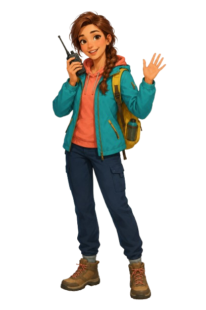

LOGIC · GRAMMAR TRAPS
Grammar Mines
Open every safe tile. Use the numbers to find and flag ten hidden mines.
Near Lake Drivyaty, Mia finds an old Grammar Guide — but a sudden wind scatters its pages across Braslav. Help her recover them by crossing a minefield, collecting MAKE and DO expressions on the road, and finding hidden objects in illustrated scenes. Complete all three missions, restore the guide and reveal Mia’s final message.

Open every safe tile. Use the numbers to find and flag ten hidden mines.
Drive Mia's car and collect expressions that match MAKE or DO.
Find objects around Braslav and unlock grammar challenges.